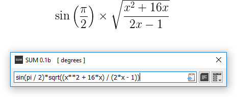

The name SUM does not indicate mathematical operation of addition. It's just an abbreviation - Stop Using Mouse! ( ... at least in calculations).
SUM is an easy to use yet powerful and intuitive cross-platform "one-line" calculator with history. It provides a clear and minimalistic User Interface to quickly compose calculation expressions in arbitrary length and depth.
The calculation engine is based on Python interpreter (see About in main Menu for Python version).
One of key features of SUM is system-wide Global Shortcut Key, activating (or bringing to top) and minimizing SUM by keyboard. The advantage of Global Shortcut Key is more significant if the keyboard has a Numeric keypad. See Preferences to set up Global Shortcut Key.
SUM uses one-line syntax for calculation expressions, so composition of any nested element, subexpression and non-literal math symbol must be done using parentheses.
In the example below "square root" symbol translated to sqrt( ) function (see Functions list topic for all functions), which takes nested expression as an argument. Variable x here must be predefined by user, unlike pi (π), which is a built-in constant (see Constants and variables).
Once calculation is done, it is automatically appended to History (if Add to History check-box is not unchecked in Preferences), and the result is copied to the clipboard (if Autocopy result option is not Off).
See Calculations topic for more information.

Translation of mathematical expression into one-line expression for SUM.
Hover over the image to visually highlight the translation.
History is closed by default. It can be open either by corresponding button or Ctrl-H shortcut key. See User Interface for History Mode.
Up and Down keyboard keys move respectively back and forth through the History. Moving through History is not available in Edit state (see User Interface - "Calculation Field and History"), to prevent user losing already composed expression with Up key by mistake. History items can be deleted selectively or cleared-up by corresponding option in Preferences.
There is no need to recalculate an expression, which is already in History, to copy the result. Once held on required item, just press Ctrl-C to copy the expression (if Calculation Field has a selection, selected text will be copied instead) or Ctrl-R to copy the result. See Shortcut keys topic for all shortcut keys.
The indicator at the right of the title on Title bar surrounding by square brackets shows the current angular unit for trigonometric function. Two possible units are available - degrees (by default) and radians.
Choose a topic from the left menu for more help.